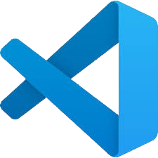

Langage de script côté serveur, utilisé pour créer des sites web dynamiques et interagir avec des bases de données. Il permet par exemple de gérer les utilisateurs, les formulaires ou les contenus.
Langage de base du web, il permet de structurer le contenu d'une page (titres, paragraphes, images, liens, etc.). C’est le squelette de tout site web.
Langage de programmation côté client, utilisé pour rendre les pages web interactives (animations, menus, formulaires dynamiques, etc.). Indispensable pour une bonne expérience utilisateur.
Langage de style utilisé pour rendre les pages HTML plus attrayantes. Il gère la mise en page, les couleurs, les polices, et l’adaptation aux différents écrans.
Application language
Langage orienté objet, portable et robuste. Utilisé dans le développement d'applications Android, d'applications d'entreprise, ou de logiciels multiplateformes.
Langage de programmation bas niveau très proche du matériel. Rapide et puissant, il est utilisé pour les systèmes embarqués, les OS et les logiciels nécessitant des performances élevées.
Évolution du langage C, il ajoute la programmation orientée objet. Utilisé dans le développement de jeux, d’applications complexes, ou encore de logiciels système.
Langage moderne développé par Microsoft. Utilisé principalement pour créer des applications Windows, des jeux avec Unity, ou des applications web avec .NET.
Logiciel
IDE
JetBrains est une suite d'IDE populaires comme IntelliJ IDEA, PyCharm, et WebStorm, utilisés pour le développement de logiciels et d'applications.

Visual Studio Code est un éditeur de code source léger et puissant, supportant de nombreux langages et extensions.
Microsoft Visual Studio est un IDE complet pour le développement d'applications Windows, web, et mobiles.
Bureautique
Google Workspace est une suite bureautique en ligne comprenant Gmail, Docs, Sheets, Slides, et bien plus, permettant une collaboration en temps réel.
LibreOffice est une suite bureautique open-source comprenant Writer, Calc, Impress, et d'autres outils pour la création et l'édition de documents.
Langue
Anglais
Langue internationale, l'anglais esst essentiel dans le domaine de l'informatique et du développement, tant pour la documentation que pour la communication. Niveau : B2